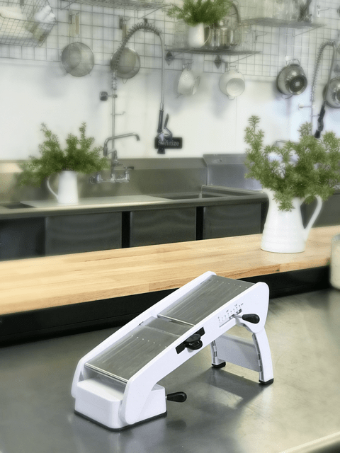

Mandoline – Why and What I Recommend

A mandoline isn’t mandatory. Well, shoot, none of these items listed here are, but they will help get the job done safely and quickly and who doesn’t want that?
A mandoline will ensure that you aren’t losing precious time slicing vegetables. Some people are too nervous to use them, but honestly, they are no more dangerous than a chef knife. Both acts of cutting with a chef knife and a mandoline require concentration with deliberate motions to avoid injuring yourself.
I have gone through many different mandolines, not because they wear out but because I keep testing different products to see what works best for me. So right now, I have two that I use regularly.
The first one is the OXO Good Grips V-Blade Mandoline Slicer; I like this one for big jobs. It offers up four easily adjustable slice thickness settings: 1.5mm, 3mm, 4.5mm, and 6mm. It also comes with several blades that provide straight cuts, a wavy blade for straight or crinkle cuts, and julienne blades for fine julienne strips. It is also recommended by America’s Test Kitchen.
I use this when I slice fruit and veggies for dehydrating. One of the crucial things when dehydrating food is to have the cuts the same size, that way everything will dry evenly. This mandoline makes the task of slicing go fast, plus the cuts are all even.
The other unit that I tend to use quite often is the Kyocera Advanced Ceramic Adjustable Mandoline Vegetable Slicer w/ Handguard. It doesn’t come with any fancy blades, but you can adjust the thickness of the cuts. It’s great to use for quick jobs that you can do standing over a plate or bowl.
I store this one in my kitchen drawer, right next to my workstation. I pull it out for quick slicing jobs, such as when making a salad. Works great to quickly create thin slices of carrots, celery, radishes, etc. Super easy to clean as well.
When working with sharp tools in the kitchen, I recommend wearing No-Cry Cut Resistant Gloves. They are made of food safe ultra-high molecular weight polyethylene, glass fiber, and spandex. These gloves have been designed to resist cuts from even the sharpest blades. These gloves will reduce the likelihood of sustaining serious injury if accidents happen.
They are ideal for cutting, working with mandoline slicers, knives, cutters, graters, and peelers in the kitchen, woodworking, carving, carpentry, picking up broken glass, and so much more. Don’t get me wrong, these gloves don’t replace the care and respect that all sharp utensils demand, but they will help build your confidence as you up your culinary skills. There is a link posted below on the ones that I recommend.
Let’s Go Shopping
My Recommendations: (prices subject to change)
Mandoline
Optional but recommend when using knives and mandolines
- NoCry Cut Resistant Gloves – (be sure to select size upon ordering) $10.94
Nouveauraw.com is a participant in the Amazon Services LLC Associates Program, an affiliate advertising program designed to provide a means for us to earn fees by linking to Amazon.com and affiliated sites – at no extra cost to you.
Thank you for your support! amie sue
© AmieSue.com